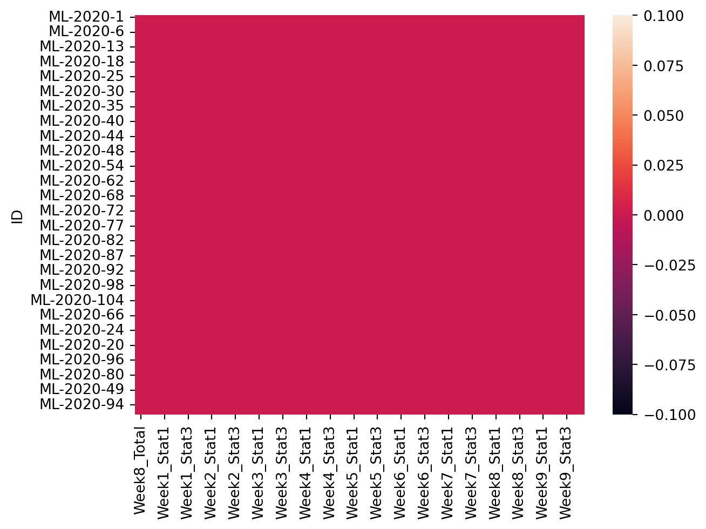
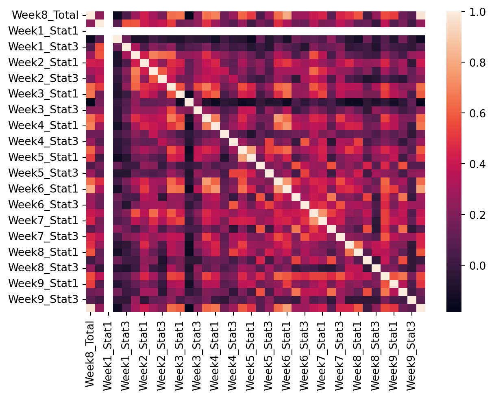

Requirement already satisfied: numpy in /Users/yoseph/anaconda3/lib/python3.11/site-packages (1.24.3)
Collecting sklearn
Using cached sklearn-0.0.post12.tar.gz (2.6 kB)
Preparing metadata (setup.py) ... - error
error: subprocess-exited-with-error
× python setup.py egg_info did not run successfully.
│ exit code: 1
╰─> [15 lines of output]
The 'sklearn' PyPI package is deprecated, use 'scikit-learn'
rather than 'sklearn' for pip commands.
Here is how to fix this error in the main use cases:
- use 'pip install scikit-learn' rather than 'pip install sklearn'
- replace 'sklearn' by 'scikit-learn' in your pip requirements files
(requirements.txt, setup.py, setup.cfg, Pipfile, etc ...)
- if the 'sklearn' package is used by one of your dependencies,
it would be great if you take some time to track which package uses
'sklearn' instead of 'scikit-learn' and report it to their issue tracker
- as a last resort, set the environment variable
SKLEARN_ALLOW_DEPRECATED_SKLEARN_PACKAGE_INSTALL=True to avoid this error
More information is available at
https://github.com/scikit-learn/sklearn-pypi-package
[end of output]
note: This error originates from a subprocess, and is likely not a problem with pip.
error: metadata-generation-failed
× Encountered error while generating package metadata.
╰─> See above for output.
note: This is an issue with the package mentioned above, not pip.
hint: See above for details.
Note: you may need to restart the kernel to use updated packages.Student Grade Prediction
Confusion Matrix
Classification
Using three ML classifier to predict student grade
Banner Image Credit: Jernej Furman
In this blog I will use three different machine learning classification algorithms provided in skit-learn to predict student grade using data about students’ performance in quizzes, assignments and other features collected in Moodle LMS
1. Preparation
1.1 Install required packages
1.2 Perform the necessary imports
import numpy as np
import pandas as pd
from matplotlib import pyplot as plt
import seaborn as sns
import warnings
from sklearn import preprocessing
from sklearn.linear_model import (
LogisticRegression,
SGDClassifier,
)
from sklearn.tree import DecisionTreeClassifier
from sklearn.neighbors import KNeighborsClassifier
from sklearn.naive_bayes import MultinomialNB
from sklearn.ensemble import (
BaggingClassifier,
GradientBoostingClassifier,
RandomForestClassifier,
)
from sklearn.naive_bayes import GaussianNB
from sklearn.neighbors import KNeighborsClassifier
from sklearn.neural_network import MLPClassifier
from sklearn.svm import SVC
from sklearn.tree import DecisionTreeClassifier
from sklearn.svm import LinearSVC
from sklearn.discriminant_analysis import QuadraticDiscriminantAnalysis
from sklearn.ensemble import AdaBoostClassifier, RandomForestClassifier
from sklearn.gaussian_process import GaussianProcessClassifier
from sklearn.gaussian_process.kernels import RBF
from sklearn.model_selection import train_test_split
from sklearn.metrics import (
accuracy_score,
# classification_report,
# mean_squared_error,
# r2_score,
# mean_absolute_error,
# confusion_matrix
)Suppress Warnings
warnings.simplefilter(action='ignore', category=FutureWarning)2. Data Understanding and Preprocessing
2.1 Data description
The data was collected from a fully online nine-week-long course on, hosted on the online learning management system Moodle. The dataset containes anonymized information relating to 107 enrolled students. The data included students’ grades (from 3 mini projects, 3 quizzes and 3 peer reviews and the final overall grade) as well as the course logs. The deadline for the three mini projects fell within weeks 3, 5 and 8 of the course, whereas the deadline for the quizzes fell within weeks 2, 4 and 8.
- Status0: course / lectures / content related (Course module viewed, Course viewed, Course ac2vity comple2on updated, Course module instance list viewed, Content page viewed, Lesson started, Lesson resumed, Lesson restarted, Lesson ended)
- Status1: assignment related (Quiz aPempt reviewed, Quiz aPempt submiPed, Quiz aPempt summary viewed, Quiz aPempt viewed, Quiz aPempt started, Ques2on answered, Ques2on viewed, Submission re-assessed, Submission assessed, Submission updated, Submission created, Submission viewed)
- Status2: grade related (Grade user report viewed, Grade overview report viewed, User graded, Grade deleted, User profile viewed, Recent ac2vity viewed, User report viewed, Course user report viewed, Outline report viewed)
- Status3: forum related (Post updated, Post created, Discussion created, Some content has been posted, Discussion viewed)
- 9 grades (Week2_Quiz1, Week3_MP1, … Week7_MP3)
- 36 logs (Week1_Stat0, Week1_Stat1, Week1_Stat2, Week1_Stat3, … Week9_Stat0, Week9_Stat1, Week9_Stat2, Week9_Stat3)
2.2 Load the data
df = pd.read_csv("../data/MP2_Data.csv")2.3 Try to learn some information about the data
Display the first and last 5 rows
df.head()| ID | Week2_Quiz1 | Week3_MP1 | Week3_PR1 | Week5_MP2 | Week5_PR2 | Week7_MP3 | Week7_PR3 | Week4_Quiz2 | Week6_Quiz3 | ... | Week7_Stat3 | Week8_Stat0 | Week8_Stat1 | Week8_Stat2 | Week8_Stat3 | Week9_Stat0 | Week9_Stat1 | Week9_Stat2 | Week9_Stat3 | Grade | |
|---|---|---|---|---|---|---|---|---|---|---|---|---|---|---|---|---|---|---|---|---|---|
| 0 | ML-2020-1 | 5.00 | 15.0 | 5.0 | 16.09 | 5.00 | 21.88 | 5.0 | 5.00 | 5.0 | ... | 0 | 5 | 4 | 0 | 4 | 8 | 6 | 1 | 0 | 4 |
| 1 | ML-2020-2 | 3.33 | 15.0 | 5.0 | 17.83 | 5.00 | 22.27 | 5.0 | 4.00 | 5.0 | ... | 8 | 5 | 2 | 0 | 0 | 25 | 3 | 2 | 5 | 4 |
| 2 | ML-2020-3 | 1.67 | 13.0 | 5.0 | 15.22 | 5.00 | 27.05 | 2.5 | 5.00 | 5.0 | ... | 0 | 8 | 2 | 0 | 0 | 9 | 0 | 1 | 0 | 3 |
| 3 | ML-2020-4 | 2.50 | 14.0 | 5.0 | 10.00 | 5.00 | 31.02 | 5.0 | 3.13 | 5.0 | ... | 4 | 10 | 0 | 0 | 0 | 7 | 6 | 0 | 0 | 3 |
| 4 | ML-2020-6 | 0.00 | 15.0 | 5.0 | 12.17 | 4.93 | 15.91 | 5.0 | 4.67 | 5.0 | ... | 6 | 8 | 5 | 1 | 1 | 5 | 3 | 1 | 0 | 2 |
5 rows × 48 columns
df.tail()| ID | Week2_Quiz1 | Week3_MP1 | Week3_PR1 | Week5_MP2 | Week5_PR2 | Week7_MP3 | Week7_PR3 | Week4_Quiz2 | Week6_Quiz3 | ... | Week7_Stat3 | Week8_Stat0 | Week8_Stat1 | Week8_Stat2 | Week8_Stat3 | Week9_Stat0 | Week9_Stat1 | Week9_Stat2 | Week9_Stat3 | Grade | |
|---|---|---|---|---|---|---|---|---|---|---|---|---|---|---|---|---|---|---|---|---|---|
| 102 | ML-2020-60 | 0.0 | 0.0 | 0.0 | 0.0 | 0.0 | 0.0 | 0.0 | 0.0 | 0.0 | ... | 0 | 28 | 0 | 22 | 0 | 1 | 0 | 0 | 0 | 0 |
| 103 | ML-2020-58 | 0.0 | 0.0 | 0.0 | 0.0 | 0.0 | 0.0 | 0.0 | 0.0 | 0.0 | ... | 0 | 0 | 0 | 0 | 0 | 3 | 0 | 0 | 0 | 0 |
| 104 | ML-2020-94 | 0.0 | 0.0 | 0.0 | 0.0 | 0.0 | 0.0 | 0.0 | 0.0 | 0.0 | ... | 0 | 0 | 0 | 0 | 0 | 0 | 0 | 0 | 0 | 0 |
| 105 | ML-2020-9 | 0.0 | 0.0 | 0.0 | 0.0 | 0.0 | 0.0 | 0.0 | 0.0 | 0.0 | ... | 0 | 0 | 0 | 0 | 0 | 6 | 0 | 0 | 0 | 0 |
| 106 | ML-2020-86 | 0.0 | 0.0 | 0.0 | 0.0 | 0.0 | 0.0 | 0.0 | 0.0 | 0.0 | ... | 0 | 0 | 0 | 0 | 0 | 0 | 0 | 0 | 0 | 0 |
5 rows × 48 columns
Display details about each attribute
df.info()<class 'pandas.core.frame.DataFrame'>
RangeIndex: 107 entries, 0 to 106
Data columns (total 48 columns):
# Column Non-Null Count Dtype
--- ------ -------------- -----
0 ID 107 non-null object
1 Week2_Quiz1 107 non-null float64
2 Week3_MP1 107 non-null float64
3 Week3_PR1 107 non-null float64
4 Week5_MP2 107 non-null float64
5 Week5_PR2 107 non-null float64
6 Week7_MP3 107 non-null float64
7 Week7_PR3 107 non-null float64
8 Week4_Quiz2 107 non-null float64
9 Week6_Quiz3 107 non-null float64
10 Week8_Total 107 non-null float64
11 Week1_Stat0 107 non-null int64
12 Week1_Stat1 107 non-null int64
13 Week1_Stat2 107 non-null int64
14 Week1_Stat3 107 non-null int64
15 Week2_Stat0 107 non-null int64
16 Week2_Stat1 107 non-null int64
17 Week2_Stat2 107 non-null int64
18 Week2_Stat3 107 non-null int64
19 Week3_Stat0 107 non-null int64
20 Week3_Stat1 107 non-null int64
21 Week3_Stat2 107 non-null int64
22 Week3_Stat3 107 non-null int64
23 Week4_Stat0 107 non-null int64
24 Week4_Stat1 107 non-null int64
25 Week4_Stat2 107 non-null int64
26 Week4_Stat3 107 non-null int64
27 Week5_Stat0 107 non-null int64
28 Week5_Stat1 107 non-null int64
29 Week5_Stat2 107 non-null int64
30 Week5_Stat3 107 non-null int64
31 Week6_Stat0 107 non-null int64
32 Week6_Stat1 107 non-null int64
33 Week6_Stat2 107 non-null int64
34 Week6_Stat3 107 non-null int64
35 Week7_Stat0 107 non-null int64
36 Week7_Stat1 107 non-null int64
37 Week7_Stat2 107 non-null int64
38 Week7_Stat3 107 non-null int64
39 Week8_Stat0 107 non-null int64
40 Week8_Stat1 107 non-null int64
41 Week8_Stat2 107 non-null int64
42 Week8_Stat3 107 non-null int64
43 Week9_Stat0 107 non-null int64
44 Week9_Stat1 107 non-null int64
45 Week9_Stat2 107 non-null int64
46 Week9_Stat3 107 non-null int64
47 Grade 107 non-null int64
dtypes: float64(10), int64(37), object(1)
memory usage: 40.3+ KBSet ‘ID’ as the index column
df.set_index('ID', inplace=True)
df.head()| Week2_Quiz1 | Week3_MP1 | Week3_PR1 | Week5_MP2 | Week5_PR2 | Week7_MP3 | Week7_PR3 | Week4_Quiz2 | Week6_Quiz3 | Week8_Total | ... | Week7_Stat3 | Week8_Stat0 | Week8_Stat1 | Week8_Stat2 | Week8_Stat3 | Week9_Stat0 | Week9_Stat1 | Week9_Stat2 | Week9_Stat3 | Grade | |
|---|---|---|---|---|---|---|---|---|---|---|---|---|---|---|---|---|---|---|---|---|---|
| ID | |||||||||||||||||||||
| ML-2020-1 | 5.00 | 15.0 | 5.0 | 16.09 | 5.00 | 21.88 | 5.0 | 5.00 | 5.0 | 82.97 | ... | 0 | 5 | 4 | 0 | 4 | 8 | 6 | 1 | 0 | 4 |
| ML-2020-2 | 3.33 | 15.0 | 5.0 | 17.83 | 5.00 | 22.27 | 5.0 | 4.00 | 5.0 | 82.43 | ... | 8 | 5 | 2 | 0 | 0 | 25 | 3 | 2 | 5 | 4 |
| ML-2020-3 | 1.67 | 13.0 | 5.0 | 15.22 | 5.00 | 27.05 | 2.5 | 5.00 | 5.0 | 79.44 | ... | 0 | 8 | 2 | 0 | 0 | 9 | 0 | 1 | 0 | 3 |
| ML-2020-4 | 2.50 | 14.0 | 5.0 | 10.00 | 5.00 | 31.02 | 5.0 | 3.13 | 5.0 | 80.65 | ... | 4 | 10 | 0 | 0 | 0 | 7 | 6 | 0 | 0 | 3 |
| ML-2020-6 | 0.00 | 15.0 | 5.0 | 12.17 | 4.93 | 15.91 | 5.0 | 4.67 | 5.0 | 67.68 | ... | 6 | 8 | 5 | 1 | 1 | 5 | 3 | 1 | 0 | 2 |
5 rows × 47 columns
Get additional information about each column
df.describe().T| count | mean | std | min | 25% | 50% | 75% | max | |
|---|---|---|---|---|---|---|---|---|
| Week2_Quiz1 | 107.0 | 2.406636 | 2.000317 | 0.0 | 0.0 | 3.33 | 4.170 | 5.00 |
| Week3_MP1 | 107.0 | 7.949626 | 6.892312 | 0.0 | 0.0 | 12.00 | 14.305 | 15.00 |
| Week3_PR1 | 107.0 | 2.803738 | 2.493158 | 0.0 | 0.0 | 5.00 | 5.000 | 5.00 |
| Week5_MP2 | 107.0 | 9.237757 | 8.640610 | 0.0 | 0.0 | 10.87 | 18.045 | 20.00 |
| Week5_PR2 | 107.0 | 2.844673 | 2.482099 | 0.0 | 0.0 | 5.00 | 5.000 | 5.00 |
| Week7_MP3 | 107.0 | 14.481869 | 14.080211 | 0.0 | 0.0 | 15.91 | 27.440 | 35.00 |
| Week7_PR3 | 107.0 | 2.383178 | 2.437501 | 0.0 | 0.0 | 2.50 | 5.000 | 5.00 |
| Week4_Quiz2 | 107.0 | 2.609439 | 2.229419 | 0.0 | 0.0 | 3.17 | 4.710 | 5.00 |
| Week6_Quiz3 | 107.0 | 2.663551 | 2.414359 | 0.0 | 0.0 | 4.00 | 5.000 | 5.00 |
| Week8_Total | 107.0 | 47.380467 | 41.035589 | 0.0 | 0.0 | 71.53 | 83.550 | 99.71 |
| Week1_Stat0 | 107.0 | 6.785047 | 7.157300 | 0.0 | 1.0 | 4.00 | 12.000 | 27.00 |
| Week1_Stat1 | 107.0 | 0.000000 | 0.000000 | 0.0 | 0.0 | 0.00 | 0.000 | 0.00 |
| Week1_Stat2 | 107.0 | 0.598131 | 1.966031 | 0.0 | 0.0 | 0.00 | 0.000 | 11.00 |
| Week1_Stat3 | 107.0 | 0.224299 | 0.730836 | 0.0 | 0.0 | 0.00 | 0.000 | 6.00 |
| Week2_Stat0 | 107.0 | 16.887850 | 16.307960 | 0.0 | 6.5 | 15.00 | 24.000 | 104.00 |
| Week2_Stat1 | 107.0 | 13.299065 | 11.308049 | 0.0 | 10.0 | 11.00 | 19.000 | 57.00 |
| Week2_Stat2 | 107.0 | 1.252336 | 1.505295 | 0.0 | 1.0 | 1.00 | 1.000 | 10.00 |
| Week2_Stat3 | 107.0 | 1.841121 | 4.202761 | 0.0 | 0.0 | 0.00 | 2.000 | 25.00 |
| Week3_Stat0 | 107.0 | 31.728972 | 28.686191 | 0.0 | 3.0 | 27.00 | 47.500 | 108.00 |
| Week3_Stat1 | 107.0 | 2.822430 | 3.206165 | 0.0 | 0.0 | 4.00 | 4.000 | 15.00 |
| Week3_Stat2 | 107.0 | 0.953271 | 2.689544 | 0.0 | 0.0 | 0.00 | 0.000 | 15.00 |
| Week3_Stat3 | 107.0 | 1.130841 | 2.269919 | 0.0 | 0.0 | 0.00 | 1.000 | 14.00 |
| Week4_Stat0 | 107.0 | 41.915888 | 47.164330 | 0.0 | 0.5 | 27.00 | 74.500 | 240.00 |
| Week4_Stat1 | 107.0 | 16.046729 | 17.040675 | 0.0 | 0.0 | 15.00 | 27.500 | 87.00 |
| Week4_Stat2 | 107.0 | 1.943925 | 2.790928 | 0.0 | 0.0 | 1.00 | 2.000 | 13.00 |
| Week4_Stat3 | 107.0 | 1.009346 | 2.806648 | 0.0 | 0.0 | 0.00 | 1.000 | 24.00 |
| Week5_Stat0 | 107.0 | 26.074766 | 31.159269 | 0.0 | 0.0 | 20.00 | 40.500 | 185.00 |
| Week5_Stat1 | 107.0 | 5.009346 | 6.568213 | 0.0 | 0.0 | 4.00 | 6.500 | 39.00 |
| Week5_Stat2 | 107.0 | 1.588785 | 3.954823 | 0.0 | 0.0 | 0.00 | 1.000 | 23.00 |
| Week5_Stat3 | 107.0 | 0.663551 | 1.822003 | 0.0 | 0.0 | 0.00 | 0.000 | 11.00 |
| Week6_Stat0 | 107.0 | 37.607477 | 47.851334 | 0.0 | 0.0 | 18.00 | 65.000 | 208.00 |
| Week6_Stat1 | 107.0 | 14.271028 | 14.009815 | 0.0 | 0.0 | 15.00 | 25.000 | 51.00 |
| Week6_Stat2 | 107.0 | 2.775701 | 7.206271 | 0.0 | 0.0 | 1.00 | 2.000 | 45.00 |
| Week6_Stat3 | 107.0 | 0.411215 | 1.220526 | 0.0 | 0.0 | 0.00 | 0.000 | 7.00 |
| Week7_Stat0 | 107.0 | 16.355140 | 22.242341 | 0.0 | 0.0 | 11.00 | 27.000 | 145.00 |
| Week7_Stat1 | 107.0 | 3.242991 | 5.001587 | 0.0 | 0.0 | 0.00 | 5.000 | 24.00 |
| Week7_Stat2 | 107.0 | 1.813084 | 4.895379 | 0.0 | 0.0 | 0.00 | 1.000 | 35.00 |
| Week7_Stat3 | 107.0 | 1.252336 | 2.399267 | 0.0 | 0.0 | 0.00 | 2.000 | 12.00 |
| Week8_Stat0 | 107.0 | 10.514019 | 15.563846 | 0.0 | 0.0 | 5.00 | 14.000 | 90.00 |
| Week8_Stat1 | 107.0 | 3.130841 | 4.841028 | 0.0 | 0.0 | 0.00 | 5.000 | 27.00 |
| Week8_Stat2 | 107.0 | 1.112150 | 3.658351 | 0.0 | 0.0 | 0.00 | 0.000 | 22.00 |
| Week8_Stat3 | 107.0 | 0.355140 | 1.191577 | 0.0 | 0.0 | 0.00 | 0.000 | 9.00 |
| Week9_Stat0 | 107.0 | 7.663551 | 9.277630 | 0.0 | 1.0 | 5.00 | 11.000 | 62.00 |
| Week9_Stat1 | 107.0 | 1.607477 | 2.687346 | 0.0 | 0.0 | 0.00 | 2.000 | 12.00 |
| Week9_Stat2 | 107.0 | 1.093458 | 3.368928 | 0.0 | 0.0 | 0.00 | 0.500 | 25.00 |
| Week9_Stat3 | 107.0 | 0.046729 | 0.483368 | 0.0 | 0.0 | 0.00 | 0.000 | 5.00 |
| Grade | 107.0 | 2.074766 | 1.993863 | 0.0 | 0.0 | 3.00 | 4.000 | 5.00 |
From the description (in the pdf file) Week8_total seems to be a sum of the 9 grades, to check, I create a temporary column called sum and compare
grade_cols = ['Week2_Quiz1','Week4_Quiz2','Week6_Quiz3','Week3_MP1','Week5_MP2','Week7_MP3','Week3_PR1','Week5_PR2','Week7_PR3']
df['sum'] = df[grade_cols].sum(1)
df[['sum', 'Week8_Total']]| sum | Week8_Total | |
|---|---|---|
| ID | ||
| ML-2020-1 | 82.97 | 82.97 |
| ML-2020-2 | 82.43 | 82.43 |
| ML-2020-3 | 79.44 | 79.44 |
| ML-2020-4 | 80.65 | 80.65 |
| ML-2020-6 | 67.68 | 67.68 |
| ... | ... | ... |
| ML-2020-60 | 0.00 | 0.00 |
| ML-2020-58 | 0.00 | 0.00 |
| ML-2020-94 | 0.00 | 0.00 |
| ML-2020-9 | 0.00 | 0.00 |
| ML-2020-86 | 0.00 | 0.00 |
107 rows × 2 columns
These columns are the same representing the same data, hence, I can drop the individual values and keep to total. Also, since I do not plan to perform any time serious analysis (i.e., I’m not interested in the changes over weeks on the grades) I can keep the Week8_Total and drop the individual grade to reduce the features I need to consider. P.S: I also drop the temporary ‘sum’ colum
grade_cols.append('sum')
print(grade_cols)
df=df.drop(columns=grade_cols)
df.describe().T['Week2_Quiz1', 'Week4_Quiz2', 'Week6_Quiz3', 'Week3_MP1', 'Week5_MP2', 'Week7_MP3', 'Week3_PR1', 'Week5_PR2', 'Week7_PR3', 'sum']| count | mean | std | min | 25% | 50% | 75% | max | |
|---|---|---|---|---|---|---|---|---|
| Week8_Total | 107.0 | 47.380467 | 41.035589 | 0.0 | 0.0 | 71.53 | 83.55 | 99.71 |
| Week1_Stat0 | 107.0 | 6.785047 | 7.157300 | 0.0 | 1.0 | 4.00 | 12.00 | 27.00 |
| Week1_Stat1 | 107.0 | 0.000000 | 0.000000 | 0.0 | 0.0 | 0.00 | 0.00 | 0.00 |
| Week1_Stat2 | 107.0 | 0.598131 | 1.966031 | 0.0 | 0.0 | 0.00 | 0.00 | 11.00 |
| Week1_Stat3 | 107.0 | 0.224299 | 0.730836 | 0.0 | 0.0 | 0.00 | 0.00 | 6.00 |
| Week2_Stat0 | 107.0 | 16.887850 | 16.307960 | 0.0 | 6.5 | 15.00 | 24.00 | 104.00 |
| Week2_Stat1 | 107.0 | 13.299065 | 11.308049 | 0.0 | 10.0 | 11.00 | 19.00 | 57.00 |
| Week2_Stat2 | 107.0 | 1.252336 | 1.505295 | 0.0 | 1.0 | 1.00 | 1.00 | 10.00 |
| Week2_Stat3 | 107.0 | 1.841121 | 4.202761 | 0.0 | 0.0 | 0.00 | 2.00 | 25.00 |
| Week3_Stat0 | 107.0 | 31.728972 | 28.686191 | 0.0 | 3.0 | 27.00 | 47.50 | 108.00 |
| Week3_Stat1 | 107.0 | 2.822430 | 3.206165 | 0.0 | 0.0 | 4.00 | 4.00 | 15.00 |
| Week3_Stat2 | 107.0 | 0.953271 | 2.689544 | 0.0 | 0.0 | 0.00 | 0.00 | 15.00 |
| Week3_Stat3 | 107.0 | 1.130841 | 2.269919 | 0.0 | 0.0 | 0.00 | 1.00 | 14.00 |
| Week4_Stat0 | 107.0 | 41.915888 | 47.164330 | 0.0 | 0.5 | 27.00 | 74.50 | 240.00 |
| Week4_Stat1 | 107.0 | 16.046729 | 17.040675 | 0.0 | 0.0 | 15.00 | 27.50 | 87.00 |
| Week4_Stat2 | 107.0 | 1.943925 | 2.790928 | 0.0 | 0.0 | 1.00 | 2.00 | 13.00 |
| Week4_Stat3 | 107.0 | 1.009346 | 2.806648 | 0.0 | 0.0 | 0.00 | 1.00 | 24.00 |
| Week5_Stat0 | 107.0 | 26.074766 | 31.159269 | 0.0 | 0.0 | 20.00 | 40.50 | 185.00 |
| Week5_Stat1 | 107.0 | 5.009346 | 6.568213 | 0.0 | 0.0 | 4.00 | 6.50 | 39.00 |
| Week5_Stat2 | 107.0 | 1.588785 | 3.954823 | 0.0 | 0.0 | 0.00 | 1.00 | 23.00 |
| Week5_Stat3 | 107.0 | 0.663551 | 1.822003 | 0.0 | 0.0 | 0.00 | 0.00 | 11.00 |
| Week6_Stat0 | 107.0 | 37.607477 | 47.851334 | 0.0 | 0.0 | 18.00 | 65.00 | 208.00 |
| Week6_Stat1 | 107.0 | 14.271028 | 14.009815 | 0.0 | 0.0 | 15.00 | 25.00 | 51.00 |
| Week6_Stat2 | 107.0 | 2.775701 | 7.206271 | 0.0 | 0.0 | 1.00 | 2.00 | 45.00 |
| Week6_Stat3 | 107.0 | 0.411215 | 1.220526 | 0.0 | 0.0 | 0.00 | 0.00 | 7.00 |
| Week7_Stat0 | 107.0 | 16.355140 | 22.242341 | 0.0 | 0.0 | 11.00 | 27.00 | 145.00 |
| Week7_Stat1 | 107.0 | 3.242991 | 5.001587 | 0.0 | 0.0 | 0.00 | 5.00 | 24.00 |
| Week7_Stat2 | 107.0 | 1.813084 | 4.895379 | 0.0 | 0.0 | 0.00 | 1.00 | 35.00 |
| Week7_Stat3 | 107.0 | 1.252336 | 2.399267 | 0.0 | 0.0 | 0.00 | 2.00 | 12.00 |
| Week8_Stat0 | 107.0 | 10.514019 | 15.563846 | 0.0 | 0.0 | 5.00 | 14.00 | 90.00 |
| Week8_Stat1 | 107.0 | 3.130841 | 4.841028 | 0.0 | 0.0 | 0.00 | 5.00 | 27.00 |
| Week8_Stat2 | 107.0 | 1.112150 | 3.658351 | 0.0 | 0.0 | 0.00 | 0.00 | 22.00 |
| Week8_Stat3 | 107.0 | 0.355140 | 1.191577 | 0.0 | 0.0 | 0.00 | 0.00 | 9.00 |
| Week9_Stat0 | 107.0 | 7.663551 | 9.277630 | 0.0 | 1.0 | 5.00 | 11.00 | 62.00 |
| Week9_Stat1 | 107.0 | 1.607477 | 2.687346 | 0.0 | 0.0 | 0.00 | 2.00 | 12.00 |
| Week9_Stat2 | 107.0 | 1.093458 | 3.368928 | 0.0 | 0.0 | 0.00 | 0.50 | 25.00 |
| Week9_Stat3 | 107.0 | 0.046729 | 0.483368 | 0.0 | 0.0 | 0.00 | 0.00 | 5.00 |
| Grade | 107.0 | 2.074766 | 1.993863 | 0.0 | 0.0 | 3.00 | 4.00 | 5.00 |
Plot the number of students who scored each grade
sns.countplot(df, x="Grade")<Axes: xlabel='Grade', ylabel='count'>
See if there are missng values
sns.heatmap(df.isnull())<Axes: ylabel='ID'>
There are no missing values for any of the students, perhaps missing a quiz or an assignment has been equated to a grade of zero
cor = df.corr()
sns.heatmap(cor)
cor_target = abs(cor['Grade'])
# Selecting highly correlated features
relevant_features = cor_target[cor_target>0.7]
relevant_featuresWeek8_Total 0.972348
Week6_Stat1 0.771988
Grade 1.000000
Name: Grade, dtype: float64We see, as expected, Week8_total is a highly correlated to final Grade. Interestingly Week6_Stat1 seems to have a high correlation to Grade. This means, students who had high activity during the sixth week of the course had scored better on the final grade (I say they scored better because we can see below the correlation is positive ) ## 2.4 Preprocessing
cor["Week6_Stat1"]["Grade"]0.7719882914970566I can remove the Week8_Total grade from the features list if I can be sure that the final grade is full based on the this total grade or I can keep it in case other factors were considered in the final grade calculation. In this case the machine learning model I build will be highly dependent on this variable to the point the other features will became irrelevant given the high correlation value observed between this feature and the target (i.e., Grade)
#df = df.drop(columns=['Week8_Total'], axis=1)#irrelevant_features = cor_target[(cor_target>=0.4) & (cor_target<=0.5)]
irrelevant_features = cor_target[(cor_target>=0.45) & (cor_target<=0.55)]
irrelevant_featuresWeek5_Stat1 0.484030
Week8_Stat0 0.450807
Week9_Stat0 0.545532
Week9_Stat1 0.496753
Name: Grade, dtype: float64#df = df.drop(columns=list(irrelevant_features.index), axis=1)Split Features and target column
x = df.drop(columns=['Grade'], axis=1).to_numpy()
y = df['Grade'].to_numpy()Normalize the features to bring them all to 0-1 range
x_normalized = preprocessing.normalize(x)
x_normalizedarray([[0.72952054, 0. , 0. , ..., 0.05275549, 0.00879258,
0. ],
[0.3833634 , 0.0372062 , 0. , ..., 0.01395233, 0.00930155,
0.02325388],
[0.72356708, 0.03643339, 0. , ..., 0. , 0.00910835,
0. ],
...,
[0. , 0. , 0. , ..., 0. , 0. ,
0. ],
[0. , 0.29411765, 0. , ..., 0. , 0. ,
0. ],
[0. , 0.41380294, 0. , ..., 0. , 0. ,
0. ]])Split training and Test data
x_train, x_test, y_train, y_test = train_test_split(x_normalized,y, test_size=.20)print("Training X Shape: {}".format(x_train.shape))
print("Training Y Shape: {}".format(y_train.shape))
print("Test X Shape: {}".format(x_test.shape))
print("Test y Shape: {}".format(y_test.shape))Training X Shape: (85, 37)
Training Y Shape: (85,)
Test X Shape: (22, 37)
Test y Shape: (22,)Summary of Preprocessing
Feature Selection
Given 107 records with 47 attributes I have removed 11 of the attributes during the pre-processing for the following reasons
- ID: THis is a unique identifier of each row of the data that dose not contain relevant information for our prediction task.
- grade_columns: These are columns that add up to give the Week8_Total column, since there is a high correlation between these and the total column I removed them in favor of Week8_Total which provides the same information in a single feature.
- Week8_Total: I finally remove Week8_Total because it has a high correlation with the target feature which will make our prediction very skewed towards this feature. The is a design decision to avoid a deterministic prediction.
Normalization
Then I normalized the data to bring values for each feature between [0-1].
Training/Test Split
I split the data into training and testing set of, first, 90% to 10% ratio. Even though it is recommended to use a 20% testing split, given our small data set I started with 10% and I came back to update this ratio based on my finding later which showed over-fitting.
3. Training
The problem of predicting one of the six grades given a set of features is a classification problem. I’ll first try to train and test multiple classifiers with their default hyperparameter values.
models = {
'LogisticRegression':LogisticRegression(),
'MultinomialNB': MultinomialNB(),
'BaggingClassifier': BaggingClassifier(),
'DecisionTreeClassifier': DecisionTreeClassifier(),
'LinearSVC':LinearSVC(),
'SGDClassifier':SGDClassifier(),
'KNeighborsClassifier':KNeighborsClassifier(),
'RandomForestClassifier':RandomForestClassifier(),
'GradientBoostingClassifier':GradientBoostingClassifier(),
"SVC":SVC(),
"GaussianProcessClassifier": GaussianProcessClassifier(),
"MLPClassifier": MLPClassifier(),
"AdaBoostClassifier": AdaBoostClassifier(),
"GaussianNB":GaussianNB(),
"QuadraticDiscriminantAnalysis":QuadraticDiscriminantAnalysis(),
}performance = pd.DataFrame(columns=["Train Accuracy","Test Accuracy"], index=list(models.keys()))for name, model in models.items():
# Train the model
model.fit(x_train, y_train)
# Make predictions on the test set
y_train_pred = model.predict(x_train)
y_test_pred = model.predict(x_test)
# Calculate evaluation metrics
test_accuracy = accuracy_score(y_test, y_test_pred)
train_accuracy = accuracy_score(y_train, y_train_pred)
#Save Test and Training Accuracies
performance.loc[name, :] = [train_accuracy,test_accuracy]4. Evaluation
performance| Train Accuracy | Test Accuracy | |
|---|---|---|
| LogisticRegression | 0.741176 | 0.5 |
| MultinomialNB | 0.658824 | 0.5 |
| BaggingClassifier | 0.988235 | 0.454545 |
| DecisionTreeClassifier | 1.0 | 0.545455 |
| LinearSVC | 0.764706 | 0.545455 |
| SGDClassifier | 0.811765 | 0.5 |
| KNeighborsClassifier | 0.752941 | 0.454545 |
| RandomForestClassifier | 1.0 | 0.5 |
| GradientBoostingClassifier | 1.0 | 0.5 |
| SVC | 0.717647 | 0.5 |
| GaussianProcessClassifier | 0.705882 | 0.5 |
| MLPClassifier | 0.752941 | 0.545455 |
| AdaBoostClassifier | 0.694118 | 0.5 |
| GaussianNB | 0.823529 | 0.454545 |
| QuadraticDiscriminantAnalysis | 1.0 | 0.409091 |
5. Optimization
From ourt trial run above SGDClassifier,LinearSVC and MLPClassifier seem to have the best accuracy score. Here I’ll try to optimize these algorithms with different hyperparameter values to improve accuracy. We do this with the GirdSearch algorithm for hyperparameter tuning.
from sklearn.model_selection import GridSearchCVSGDClassifier
model = SGDClassifier()
grid = {
'alpha' :[0.0001,0.001, 0.01, 0.1, 1, 10]
}
gridSearch = GridSearchCV(estimator=model, param_grid=grid, n_jobs=-1, scoring="accuracy")
searchResults = gridSearch.fit(x_train, y_train)
score = accuracy_score(searchResults.best_estimator_.predict(x_test),y_test)
params = searchResults.best_estimator_.get_params()
print("SGDClassifier best estimator \n alpha = {} \n accuracy_score = {}".format(params["alpha"],score))SGDClassifier best estimator
alpha = 0.0001
accuracy_score = 0.45454545454545453LinearSVC
model = LinearSVC ()
grid = {'C':[0.0001,0.001, 0.01, 0.1, 1, 10]}
gridSearch = GridSearchCV(estimator=model, param_grid=grid, n_jobs=-1, scoring="accuracy")
searchResults = gridSearch.fit(x_train, y_train)
score = accuracy_score(searchResults.best_estimator_.predict(x_test),y_test)
params = searchResults.best_estimator_.get_params()
print("LinearSVC best estimator \n C = {} \n accuracy_score = {}".format(params["C"],score))LinearSVC best estimator
C = 10
accuracy_score = 0.5454545454545454MLPClassifier
model = MLPClassifier()
grid={
'learning_rate': ["constant", "invscaling", "adaptive"],
'alpha': [0.0001,0.001, 0.01, 0.1, 1, 10],
}
gridSearch = GridSearchCV(estimator=model, param_grid=grid, n_jobs=-1, scoring="accuracy")
searchResults = gridSearch.fit(x_train, y_train)
score = accuracy_score(searchResults.best_estimator_.predict(x_test),y_test)
params = searchResults.best_estimator_.get_params()
learning_rate = params["learning_rate"]
print("MLPClassifier best estimator")
print(" alpha = {} \n learning_rate = {}".format(params['alpha'],params['learning_rate']))
print(" accuracy_score = {}".format(score))MLPClassifier best estimator
alpha = 1
learning_rate = adaptive
accuracy_score = 0.56. Discussion and Conclusion
The Best performance is obtained by LinearSVC classifier which is 82%